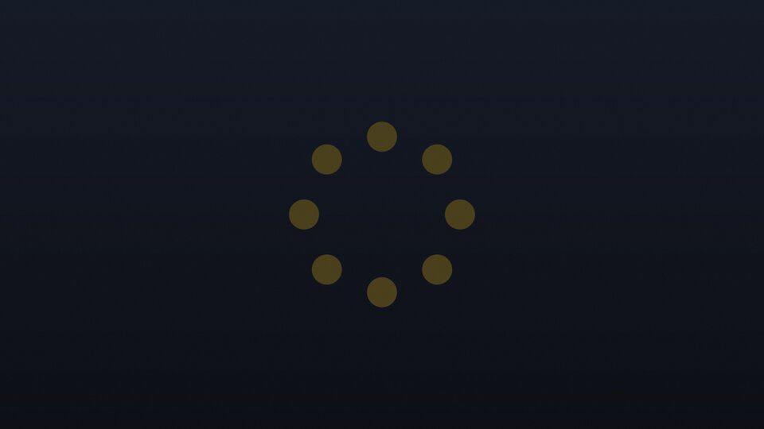
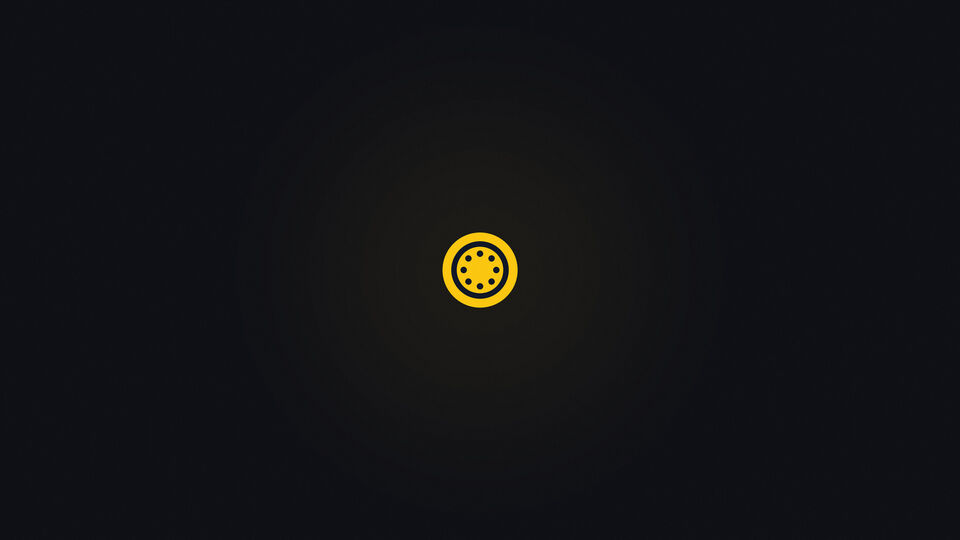
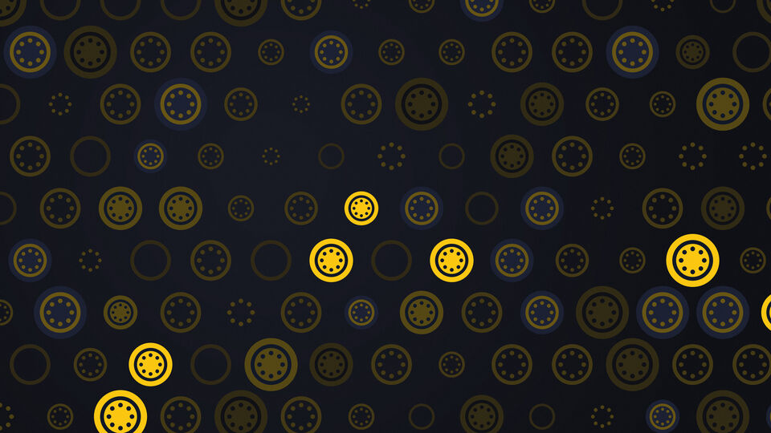
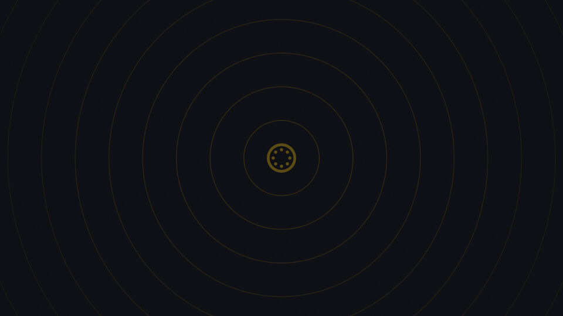
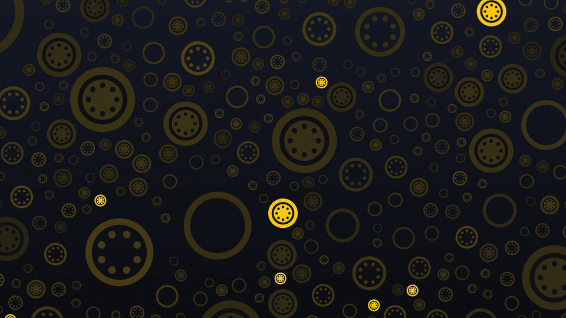

October 2026
Eleven new pictures and four that move
Fifteen new wallpapers come with Trindle this month. Eleven are still pictures and four of them move. Where the eight pictures in the style of old masters hide the mark in a scene, these are made from nothing but the mark itself: its ring, its eight dots and its yellow.
The still ones are sharp on a 4K screen. The moving ones are short loops of sixteen seconds that play on the desktop, and the moving mosaic is now the wallpaper a new desktop starts with.
How to use them
Four that move
Press play on any of them to watch the loop.
The moving mosaic
The mosaic, its marks lighting up in turn. A new desktop starts with this one.
The moving orbit
The quiet ring, its eight dots slowly turning.
The moving ripples
Rings leaving the mark and fading as they spread.
The moving sunrise
The mark rising and settling at the bottom edge, its glow swelling with it.
They rest when you are busy
A moving wallpaper stops while windows cover the screen, while the screen is locked and while the laptop runs on battery, and carries on when it can be seen again. Where the desktop is drawn by the processor, so that nothing moves, it shows only the first picture, as a still.
A note for heavy ones
Settings says that moving wallpapers use more memory and battery than still ones. A picture or video larger than 4K, a picture over 20 MB or a video over 200 MB is left out, and Settings says how many were left out and why. Trindle plays the videos itself, with no video player running beside the desktop.
The eleven still ones
From the barely there to the full yellow, so there is one for a bright room and one for a dark one.
The big ring
The mark, very large, half off the left edge.
The corner
Almost nothing: a small mark in the bottom right.

The eight dots
Just the eight dots of the mark, in a ring.
The ink
The mark in deep blue on deep blue, for the barely there.

The mark
One bright mark in the middle of the dark.

The mosaic
Rows of marks of every size, a few lit up.
The quiet ring
The mark in faint gold, alone in the middle.

The ripples
Thin rings spreading out from a small mark.

The scatter
Marks thrown across the screen, large and small.
The sunrise
The mark rising from the bottom edge in a warm glow.
The yellow
Trindle yellow all over, with the mark in the corner.